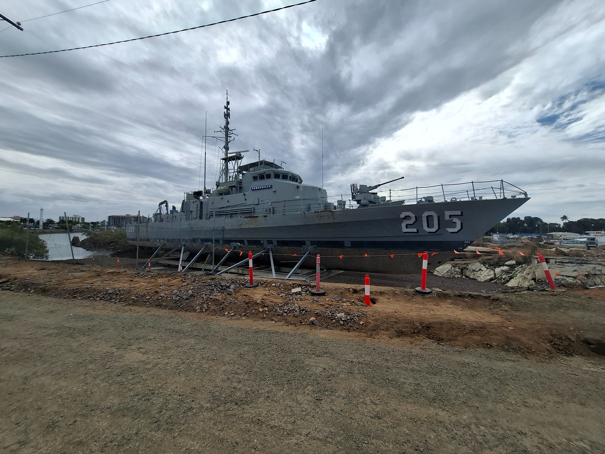
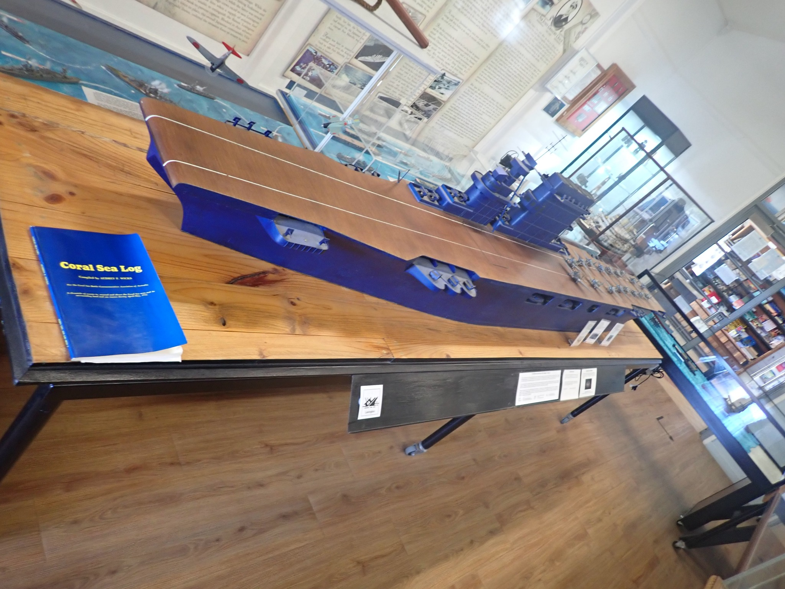
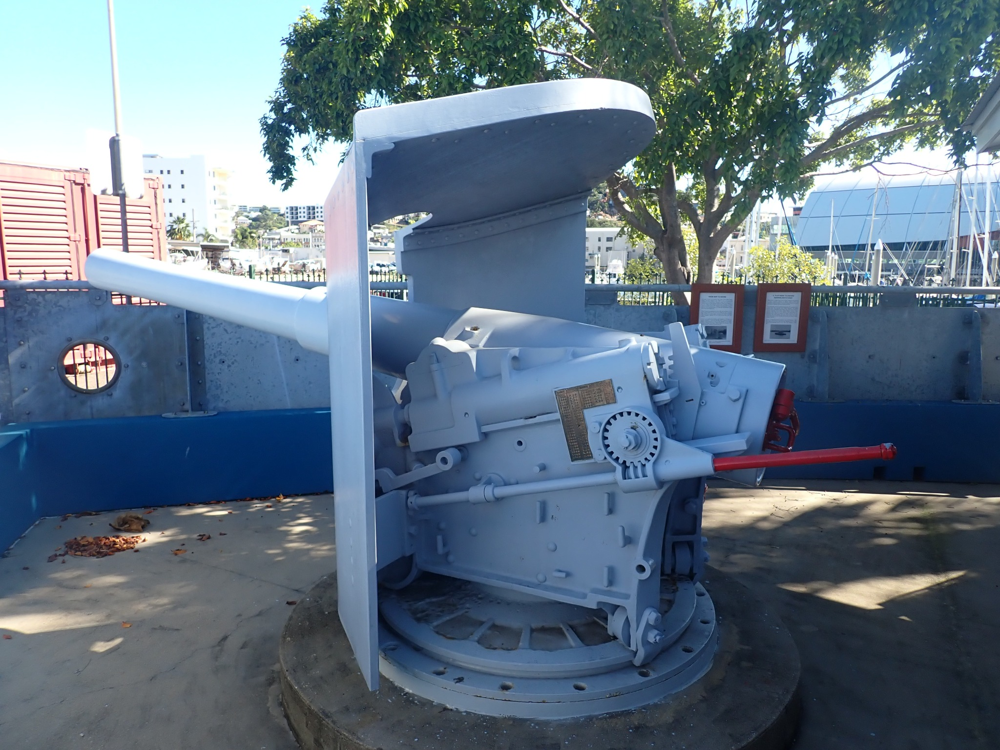
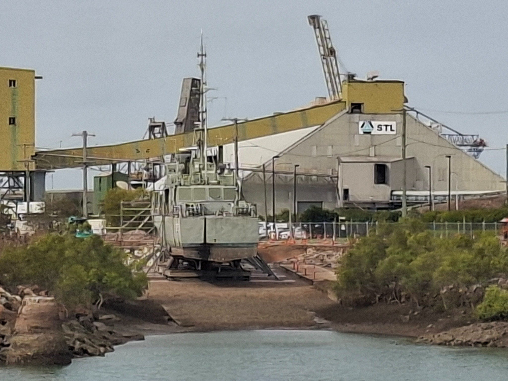

Townsville Maritime Museum
| Location | 42-68 Palmer Street, South Townsville, Queensland, Australia |
|---|---|
| Visited | 19 June 2021, 26 Sep 2026 |
| Website | Townsville Maritime Museum |

Museum Report
The Townsville Maritime Museum is a well-run museum near the ferry terminal in Townsville, North Queensland. I spent the weekend in Townsville, however my plan to visit the museum was thwarted by an unscheduled closure – so the first half of this report is based on my visit there in 2021.
Although it is a general maritime museum, it has some well-presented naval galleries, with a particular focus on the Battle of Coral Sea – which was fought not far from here. There is a good collection of ship models, and information boards covering the battle.

In terms of artefacts, there are two large naval items – a MK III 5-inch breech-loading gun from the 19th Century, which they strongly suspect came from the Queensland colonial gunboat HQMS Paluma, and an anchor from the post-war aircraft carrier USS Coral Sea, which was gifted to the city of Townsville by the USN on the 50th anniversary of the battle in 1992.

But the main naval attraction at the museum is supposed to be HMAS Townsville [II] – A Fremantle class patrol boat commissioned in 1981. The boat was decommissioned in 2007 and gifted to the museum – however 19 years later it still hasn’t been opened to the public. But there may finally be some progress – the boat was docked for maintenance, and then in 2025 it was hoisted up onto a cradle on the former Curtain Brothers slipway, about 300m from the site of the Maritime Museum. I found it there this weekend, surrounded by some fairly extensive works that appear to be preparations for opening her up to the public, and according to the museum website they are planning on building a board-walk that will take you along the river from the museum to the ship (you wouldn’t want to along the banks at river level as the place is pretty infested with salt-water crocodiles). So it seems that we might finally get the chance to have a look around this vessel.
